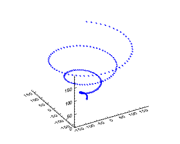

You can create three-dimensional plot graphics using the PLOT3D function. In this topic, we will use the PLOT3D function using three variables to display a three-dimensional plot.
The example below displays a very simple three-dimensional plot using example data:

The code shown below creates the graphic shown above. You can copy the entire block and paste it into the IDL command line to run it. The properties used are explained in detail after the example code.
; Define the data.
x = FINDGEN(200)
; Display a three-dimensional plot
; and define the color, thickness, and plot symbol
plot3d = PLOT3D(x *COS(x/10), x*SIN(x/10), x, 'b2d')
The format argument is set to 'b2d', indicating a blue line, with a thickness of 2, and with a diamond symbol. See Formatting IDL Graphics Symbols and Lines for complete information on formatting plot lines.
| • | Change Graphics Properties |
| • | Multiple Graphics in One Window |
| • | Saving GraphicsBar PlotsBARPLOT |
| • | PLOT |
| • | Graphics |
| • | Formatting IDL Graphics Symbols and Lines |